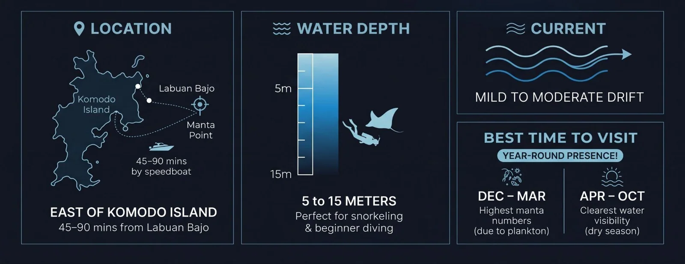
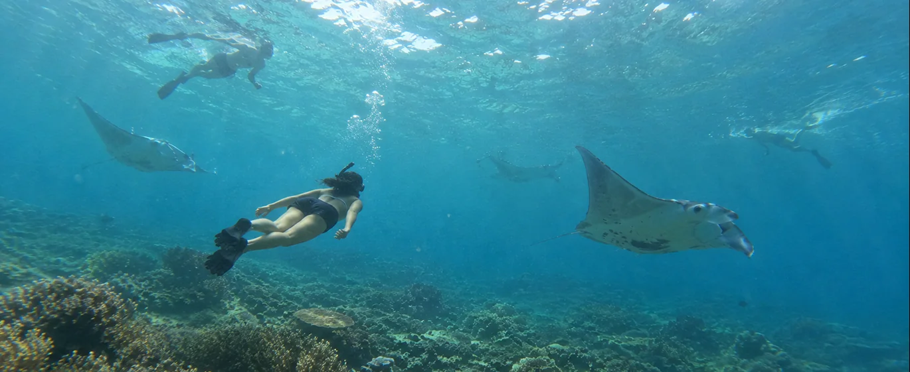
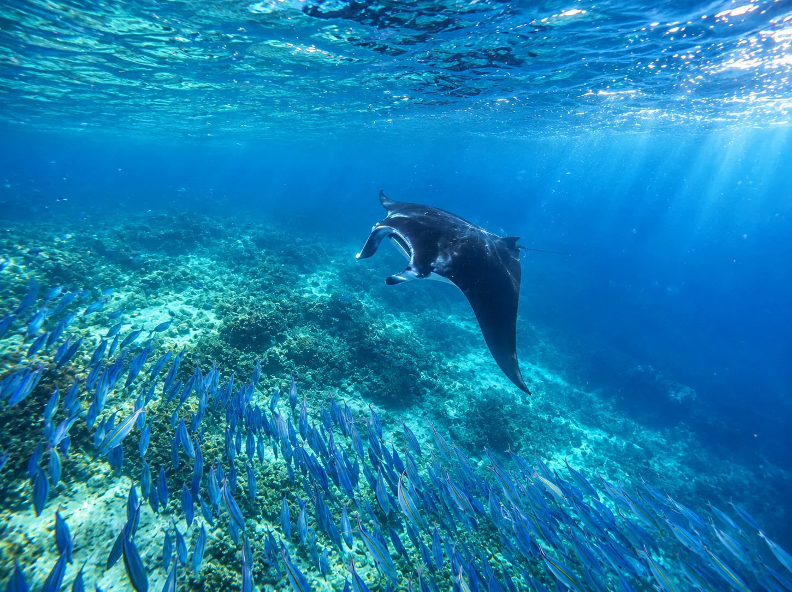

In this guide
There is an undeniable rush of adrenaline that hits the moment you sit on the edge of a liveaboard deck at Manta Point Labuan Bajo. Staring into the turquoise waters of Komodo National Park, anticipation builds as you wait for that first massive shadow to glide silently past.
Manta Point Labuan Bajo, known locally as Karang Makassar is not just a quick stop on an itinerary. It is a world-class marine encounter. During a recent 3-day 2-night open trip sailing through the park with Kapalsantai's fleets, you will plunge into the water, undoubtedly the highlight of this entire experience.
Whether you are an experienced scuba diver or a beginner snorkeler, here is your complete guide to experiencing the gentle giants of Flores in 2026.
Manta Point Labuan Bajo Quick Facts
- Local name
- Karang Makassar
- Water depth
- Around 5–15 meters
- Reef line
- 2.5 kilometers, explored by drifting
- Reef manta wingspan
- Up to 3 to 4 meters
- Water temperature
- About 28°C
- Snorkeling
- Drift snorkel, no diving certificate needed
- Minimum distance
- At least 3 meters from the mantas

Why is Manta Point so Special?
The Ultimate Underwater "Cleaning Station"
Manta rays do not just pass through these waters by accident. The channel is rich in nutrient-dense ocean currents and plankton, creating a natural feeding ground. More importantly, the shallow coral rubble acts as an underwater "cleaning station". If you watch closely, you will see tiny reef fish, like moon wrasses and butterflyfish darting around, carefully picking parasites off the mantas' bodies while the giants hover gracefully in the current.
A Protected Marine Ecosystem
The reef mantas, which boast wingspans reaching up to 3 to 4 meters, are harmless and curious by nature. But they aren't the only residents. Drifting along this 2.5-kilometer reef line, you can easily spot green sea turtles, small reef sharks, eagle rays, and vibrant coral gardens.

How to Experience the Mantas: Snorkel or Dive?

Drift Snorkeling for Beginners
You do not need a diving certificate to have a front-row seat. Because the reef flats are relatively shallow, the water visibility is usually crystal clear.
Manta Point Labuan Bajo is a drift snorkel. This means you do not have to fight the current; instead, you float along with it. Your Kapalsantai guide will drop you up-current, and the tender boat will safely shadow your group as you watch the mantas glide below.
Beginner-Friendly Scuba Diving
For certified divers, Manta Point is a bucket-list destination. The shallow depths (around 5-15 meters) make it incredibly beginner-friendly. Kneeling near the sandy rubble at the bottom while a massive manta passes just inches overhead is a mesmerizing experience you will never forget.
Essential Tips for Your Visit
To ensure these creatures keep returning to Komodo National Park, strict etiquette is required:
- Keep Your DistanceMaintain at least a 3-meter distance at all times.
- Never TouchMantas have a protective mucus layer on their skin; human touch can strip it away and cause infections.
- Do Not ChaseIf you swim aggressively toward them, they will swim away. Stay calm, float horizontally, and let their natural curiosity bring them to you.
What to Pack
- Snorkel, mask, and fins (provided on Kapalsantai charters)
- Rash guard or thin 2-3mm wetsuit (for sun protection and 28°C water)
- Reef-safe sunscreen
- Action camera for underwater videography (disable the flash!)
Ready to Answer the Call of the Mantas?
Swimming with the gentle giants of the sea is an experience that stays with you long after you have dried off. Manta Point is often seamlessly combined with stops at Padar Island, Pink Beach, and Taka Makassar.
Ready to dive in? Explore Kapalsantai’s open trip schedules and private liveaboard charters to book your Komodo sailing adventure today. Let us navigate the currents while you focus on making memories!
Discover boat tripsSea conditions, routes, and wildlife sightings can change. Check the latest information with your guide before your trip.